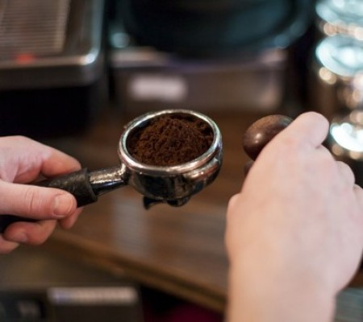

Kahve, kökboyasıgiller (Rubiaceae) familyasının Coffea cinsinde yer alan bir ağaç ve bu ağacın meyve çekirdeklerinin kavrulup öğütülmesi ile elde edilen tozun su ya da süt ile karıştırılmasıyla yapılan içecektir.
Kahve bitkisinin kökenlerinin Etiyopya'ya dayandığı, içecek olarak kullanımının ise ilk Güney Arabistan'da gerçekleştirildiği düşünülmektedir. 17. yüzyılda Venedikli tüccarlar yolu ile Avrupaya taşınmış kahve, kısa zamanda kıtaya yayılmıştır. Amerika, Asya ve Afrika kıtalarında gerçekleştirilmiş Avrupa koloniciliği sonucunda dünyanın çeşitli yerlerinde kahve plantasyonları kurulmuş, kahve dünyada geniş çapta tüketilen bir içecek halini almıştır. Kahvenin günümüzde Brezilya, Vietnam ve Kolombiya başta olmak üzere tropikal iklimli ve yükseltili bölgelerde ağırlıklı olarak tarımı yapılmaktadır.
Kahve bir içecek olarak toz haline getirilmiş kahve tanelerinin demlenmesi ile oluşturulur, ancak filtreleme, öğütme boyutu, demleme süresi, su sıcaklığı ve miktarı gibi değişik faktörler farklı içeceklere yol açabilir. Günümüzde bir çeşit filtrelenmiş kahve olan Espresso ve türevleri başta olmak üzere dünyada pek çok kahve çeşidi tüketilmektedir.
Kahve içerdiği kafein maddesinin uyarıcı niteliği yüzünden dikkat artırıcı ve uyanık tutucu özelliğe sahiptir.
Kahve Nasıl Yapılır?
Türk Kahvesi
-Cezvenin içerisine her fincan kahve için; bir fincan su, 2 çay kaşığı kahve ve şeker koyun.
– İyice karıştırın, cezveyi kısık ateşe yerleştirin ve yavaşça kaynama derecesine getirin.
– Kahve ne kadar ağır yani kısık ateşte pişerse o kadar lezzeti artar..
Nescafe
-Bolca tüketilen içecek olan Nescafe hazırlarken dikkat edilmesi gereken ufak püf noktalar vardır.
-Fincana ilk olarak su değil, nescafe koyun ki daha rahat çözülebilsin. Eğer önce su koyarsanız, Nescafe’nin hepsinin çözünmediğini, suyun üstünde yüzdüğünü görürsünüz.
-İsteğe göre Caffee Mate ilave ederek içiyorsanız 3 dolu çay kaşığı, etmiyorsanız 2 çay kaşığı Nescafe koyduktan sonra sıcak suyu ekleyin.
-Sıcak suda dikkat edilmesi gereken, beklemiş su olmaması ve çok kaynak su olmaması. Daha lezzetli bir Nescafe keyfi için, çeşme suyu yerine içme suyu kullanır ve suyu kaynatıp, yaklaşık 30-40 saniye bekledikten sonra fincana dökerseniz ideal olan 80-90 derecelik ısıyı yakalayabilirsiniz.
-Nescafe kıvamı tutturulursa köpüklü olur. Afiyet olsun.
Filtre Kahve
-French Press yüz yıla yakın bir süredir insanların kolayca kahve demlemesini sağlar.
French Press ile kahve demlemek için iri öğütülmüş, herhangi bir kahveden 12 gram ile 95 derecede 200 ml (bir su bardağı) suyu karıştırmanız gerekir.
Bu karışımın 4 dakika boyunca demlemeye bıraktıktan sonra pressi aşağı indirmeniz ve kahvenizi kupanıza boşaltmanız yeterlidir.
Anlattığımız üzere French Press ile evde kahve demlemek oldukça kolaydır. Tek ihtiyacınız iri öğütülmüş kahve, sıcak su ve bir adet French Press’tir.
French Press’inizi boyutu, markası ve bütçenize göre seçebilirsiniz.